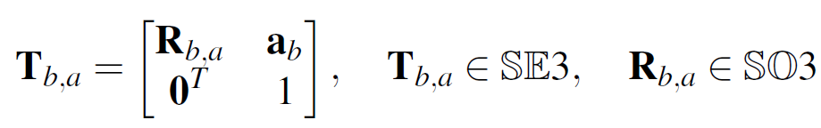
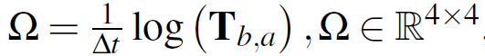

<!DOCTYPE html>
<html lang="zh-CN">

<head>
  <meta charset="utf-8" />
   
  <meta name="keywords" content="SLAM, C++, OpenCV, ROS, 算法, 机器学习, VIO, VINS, ORB-SLAM, 面试, 可穿戴" />
   
  <meta name="description" content="该文用来介绍仿真IMU数据的方法" />
  
  <meta name="viewport" content="width=device-width, initial-scale=1, maximum-scale=1" />
  
  
  
  
  <meta property="og:site_name" content="曾是少年" />
  <meta property="og:title" content="基于真实轨迹生成 IMU 数据 | 曾是少年" />
  <meta property="og:description" content="该文用来介绍仿真IMU数据的方法" />
  <meta property="og:url" content="https://grobenis.github.io2020/09/19/2020-09-19-Generate-Imu-Data-Based-on-GroundTruth/" />
  <meta property="og:type" content="article" />
  
  <meta property="og:image" content="https://grobenis.github.io/images/cover1.jpg" />
  
  <meta name="twitter:card" content="summary" />
  <title>
    基于真实轨迹生成 IMU 数据 |  曾是少年
  </title>
  <meta name="generator" content="hexo-theme-yilia-plus">
  
  <link rel="shortcut icon" href="/images/cat.ico" />
  
  
<link rel="stylesheet" href="/css/main.css">

  
<link rel="stylesheet" href="/css/custom.css">

  
  <script src="https://cdn.jsdelivr.net/npm/pace-js@1.0.2/pace.min.js"></script>
  
  

  

<link rel="alternate" href="/atom.xml" title="曾是少年" type="application/atom+xml">
</head>

</html>

<body>
  <div id="app">
    <main class="content">
      <section class="outer">
  <article id="post-2020-09-19-Generate-Imu-Data-Based-on-GroundTruth" class="article article-type-post" itemscope
  itemprop="blogPost" data-scroll-reveal>

  <div class="article-inner">
    
    <header class="article-header">
       
<h1 class="article-title sea-center" style="border-left:0" itemprop="name">
  基于真实轨迹生成 IMU 数据
</h1>
  

    </header>
    

    
    <div class="article-meta">
      <a href="/2020/09/19/2020-09-19-Generate-Imu-Data-Based-on-GroundTruth/" class="article-date">
  <time datetime="2020-09-19T15:36:55.000Z" itemprop="datePublished">2020-09-19</time>
</a>
      
  <div class="article-category">
    <a class="article-category-link" href="/categories/SLAM/">SLAM</a>
  </div>

      
      
<div class="word_count">
    <span class="post-time">
        <span class="post-meta-item-icon">
            <i class="ri-quill-pen-line"></i>
            <span class="post-meta-item-text"> 字数统计:</span>
            <span class="post-count">1.1k字</span>
        </span>
    </span>

    <span class="post-time">
        &nbsp; | &nbsp;
        <span class="post-meta-item-icon">
            <i class="ri-book-open-line"></i>
            <span class="post-meta-item-text"> 阅读时长≈</span>
            <span class="post-count">4分钟</span>
        </span>
    </span>
</div>

      
    </div>
    

    
    
    <div class="tocbot"></div>


    

    
    <div class="article-entry" itemprop="articleBody">
      
      

      
      <p>该文用来介绍仿真IMU数据的方法</p>
<p>本文介绍基于 GroundTruth 轨迹仿真生成 IMU 数据的方法，先利用矩阵对数与指数映射描述相机位姿变换，再通过 B 样条插值将离散轨迹拟合成连续曲线。在此基础上对曲线求导，即可得到带误差的加速度计与陀螺仪测量值，文章最后给出了 TUM-GT2IMU 工具的目录结构与各文件作用。</p>
<blockquote>
<p><strong>由轨迹拟合曲线，从曲线求导得 IMU</strong></p>
</blockquote>
<span id="more"></span>

<h2 id="理论基础"><a href="#理论基础" class="headerlink" title="理论基础"></a>理论基础</h2><h3 id="1、定义相机变换矩阵"><a href="#1、定义相机变换矩阵" class="headerlink" title="1、定义相机变换矩阵"></a>1、定义相机变换矩阵</h3><p>首先使用4*4的变换矩阵来来表示相机之间的变换T：</p>


<p>​ 使用$T_{b,a}$表示时间Δt内，帧$T_{w,a}$与帧$T_{w,b}$(其中w为世界坐标系)之间运动的速度（该速度恒定且包括角速度和线速度）可表示为矩阵形式：</p>


<p>​ 其中log是矩阵对数。对于矩阵组SE3，对数映射和它的逆(指数映射)就可以在闭域内计算。</p>
<h3 id="2、根据离散的点拟合连续的曲线"><a href="#2、根据离散的点拟合连续的曲线" class="headerlink" title="2、根据离散的点拟合连续的曲线"></a>2、根据离散的点拟合连续的曲线</h3><p>为了得到IMU数据，我们需要知晓轨迹的数学形式，为此，我们需要先根据离散的点轨迹拟合曲线，这个过程通过B样条插值来完成。</p>
<p>曲线p(t)可以使用点$P_i$和基本方程$B_{i,k}(t)$来表示:</p>
<p>$$
p(t) = \sum^n_{i=0}p_iB_{i,k}(t)
$$</p>
<p>其中$p_i$表示控制点，$B_{i,k}(t)$是基础函数，可以使用De Boor-Cox递归公式进行计算得到。上式可以组织为如下形式：</p>
<p>$$
p(t)=p_0\tilde{B}_{0,k}(t)+\sum^{n}_{i=1}(p_i-p_{i-1})\tilde{B}_{i,k}(t)
$$</p>
<p>其中$\tilde{B}_{i,k}(t) = \sum^{n}_{j=i}B_{j,k}(t)$是累加的基础函数。利用对数和指数映射，把$p_0$映射到李代数上：$p_0 = \log(T_{w,0})$.</p>
<p>将$p_i,p_{i-1}$两两个点之间的转移方程映射到李代数上，可表示为$\Omega_i = \log(T^{-1}_{w,i-1}T_{w,i})$.</p>
<p>可以把由等式2描述的李群中的轨迹重写为如下形式。</p>
<p>$$
T_{w,s}(t) = \exp(\tilde{B_{0,k}(t)})\log(T_{w,0}))\prod^n_{i=1}\exp(\tilde{B}_{i,k}(t)\Omega_i)
$$</p>
<p>其中，$R_{w,s}(t)\in SE^3$是t可是沿着样条线的位姿。 $T_{w,s}(t)$ 可以看作是轨迹</p>
<h3 id="3-根据曲线生成IMU的加速度和陀螺仪角速度数据"><a href="#3-根据曲线生成IMU的加速度和陀螺仪角速度数据" class="headerlink" title="3. 根据曲线生成IMU的加速度和陀螺仪角速度数据"></a>3. 根据曲线生成IMU的加速度和陀螺仪角速度数据</h3><p>​ 累积的B样条参数化满足可求导性，因此可轻松地得到加速度计和陀螺仪的带误差的测量值。计算公式如下：</p>
<p></p>
<p>其中,$\dot{R}_{w,s}$和$\ddot{s}_w$分别是$\dot{T}_{w,s}$和$\ddot{T_{w,s}}$相应的子矩阵. $g_w$是世界坐标系下的重力加速度.</p>
<p>其中，$T_{w,s}$表示s系中的点在w系中的变换，$R^T_{w,s}$是的子矩阵，表示纯旋转。$R_{w,s}$是的子矩阵，$s_w(u)$是$T_{w,s}$的子矩阵，代表平移，$g_w$是重力在w系中的加速度。</p>
<h2 id="实践环节"><a href="#实践环节" class="headerlink" title="实践环节"></a>实践环节</h2><h3 id="TUM-GT2IMU"><a href="#TUM-GT2IMU" class="headerlink" title="TUM-GT2IMU"></a>TUM-GT2IMU</h3><p>程序语言 （Matlab）</p>
<h4 id="文档目录结构"><a href="#文档目录结构" class="headerlink" title="文档目录结构"></a>文档目录结构</h4><figure class="highlight cmd"><table><tr><td class="gutter"><pre><span class="line">1</span><br><span class="line">2</span><br><span class="line">3</span><br><span class="line">4</span><br><span class="line">5</span><br><span class="line">6</span><br><span class="line">7</span><br><span class="line">8</span><br><span class="line">9</span><br><span class="line">10</span><br><span class="line">11</span><br><span class="line">12</span><br><span class="line">13</span><br><span class="line">14</span><br><span class="line">15</span><br><span class="line">16</span><br><span class="line">17</span><br><span class="line">18</span><br><span class="line">19</span><br><span class="line">20</span><br><span class="line">21</span><br><span class="line">22</span><br></pre></td><td class="code"><pre><span class="line">(base) guoben@guoben-Ubuntu-<span class="number">1804</span>:~/Project/TUM-RGBD-GT2IMU$ <span class="built_in">tree</span>.</span><br><span class="line">├── GT2IMU.m</span><br><span class="line">├── IMUgenerate2.m</span><br><span class="line">├── IMUgenerate.m</span><br><span class="line">├── test1.m</span><br><span class="line">├── trajEst.m</span><br><span class="line">├── trajGenerate.m</span><br><span class="line">├── trajRead.m</span><br><span class="line">├── trajShow.m</span><br><span class="line">└── trajWrite.m</span><br><span class="line">├── tools</span><br><span class="line">│   ├── asm2v.m</span><br><span class="line">│   ├── c2q.m</span><br><span class="line">│   ├── pose2T.m</span><br><span class="line">│   ├── q2c.m</span><br><span class="line">│   ├── q4inv.m</span><br><span class="line">│   ├── q4mult.m</span><br><span class="line">│   ├── RK4.m</span><br><span class="line">│   ├── state_pro.m</span><br><span class="line">│   ├── T2J.m</span><br><span class="line">│   ├── v2asm.m</span><br><span class="line">│   └── zeta2J.m</span><br></pre></td></tr></table></figure>

<h3 id="各文件函数与作用"><a href="#各文件函数与作用" class="headerlink" title="各文件函数与作用"></a>各文件函数与作用</h3><h4 id="1-GT2IMU-m：源文件，在这里设置轨迹文件作为输入，然后生成IMU轨迹"><a href="#1-GT2IMU-m：源文件，在这里设置轨迹文件作为输入，然后生成IMU轨迹" class="headerlink" title="1. GT2IMU.m：源文件，在这里设置轨迹文件作为输入，然后生成IMU轨迹"></a>1. GT2IMU.m：源文件，在这里设置轨迹文件作为输入，然后生成IMU轨迹</h4><h4 id="2-trajRead：读取轨迹文件"><a href="#2-trajRead：读取轨迹文件" class="headerlink" title="2. trajRead：读取轨迹文件"></a>2. trajRead：读取轨迹文件</h4><p>输入：<code>groundtruth.txt</code>文件</p>
<p>输出：<code>GT</code>文件，<code>timestamp</code>文件，<code>pose</code>文件</p>
<p>其中，时间戳文件是一维矩阵，pose文件是7维矩阵，格式：四元数+平移</p>
<h4 id="3-trajEst：仿真轨迹估计"><a href="#3-trajEst：仿真轨迹估计" class="headerlink" title="3. trajEst：仿真轨迹估计"></a>3. trajEst：仿真轨迹估计</h4><p>读取<code>GT</code>文件，生成B样条插值函数</p>
<figure class="highlight matlab"><table><tr><td class="gutter"><pre><span class="line">1</span><br></pre></td><td class="code"><pre><span class="line">save(<span class="string">&#x27;Bs&#x27;</span>,<span class="string">&#x27;kT&#x27;</span>,<span class="string">&#x27;Tk&#x27;</span>,<span class="string">&#x27;dT&#x27;</span>,<span class="string">&#x27;tIMU&#x27;</span>,<span class="string">&#x27;Te&#x27;</span>,<span class="string">&#x27;dt&#x27;</span>,<span class="string">&#x27;B0&#x27;</span>,<span class="string">&#x27;B1&#x27;</span>,<span class="string">&#x27;B2&#x27;</span>,<span class="string">&#x27;B3&#x27;</span>,<span class="string">&#x27;tl&#x27;</span>)</span><br></pre></td></tr></table></figure>

<p>生成仿真函数的过程</p>
<ul>
<li>统计节点Node个数 计算对应的时间</li>
<li>最小化由实际观测值与预测观测值之差形成的目标函数，来批量或在窗口上求解样条曲线和摄像机参数。</li>
</ul>

      
      <!-- reward -->
      
      <div id="reward-btn">
        打赏
      </div>
      
    </div>
    
    
      <!-- copyright -->
      
        <div class="declare">
          <ul class="post-copyright">
            <li>
              <i class="ri-copyright-line"></i>
              <strong>版权声明： </strong s>
              本博客所有文章除特别声明外，均采用 <a href="https://www.apache.org/licenses/LICENSE-2.0.html" rel="external nofollow"
                target="_blank">Apache License 2.0</a> 许可协议。转载请注明出处！
            </li>
          </ul>
        </div>
        
    <footer class="article-footer">
      
          
<div class="share-btn">
      <span class="share-sns share-outer">
        <i class="ri-share-forward-line"></i>
        分享
      </span>
      <div class="share-wrap">
        <i class="arrow"></i>
        <div class="share-icons">
          
          <a class="weibo share-sns" href="javascript:;" data-type="weibo">
            <i class="ri-weibo-fill"></i>
          </a>
          <a class="weixin share-sns wxFab" href="javascript:;" data-type="weixin">
            <i class="ri-wechat-fill"></i>
          </a>
          <a class="qq share-sns" href="javascript:;" data-type="qq">
            <i class="ri-qq-fill"></i>
          </a>
          <a class="douban share-sns" href="javascript:;" data-type="douban">
            <i class="ri-douban-line"></i>
          </a>
          <!-- <a class="qzone share-sns" href="javascript:;" data-type="qzone">
            <i class="icon icon-qzone"></i>
          </a> -->
          
          <a class="facebook share-sns" href="javascript:;" data-type="facebook">
            <i class="ri-facebook-circle-fill"></i>
          </a>
          <a class="twitter share-sns" href="javascript:;" data-type="twitter">
            <i class="ri-twitter-fill"></i>
          </a>
          <a class="google share-sns" href="javascript:;" data-type="google">
            <i class="ri-google-fill"></i>
          </a>
        </div>
      </div>
</div>

<div class="wx-share-modal">
    <a class="modal-close" href="javascript:;"><i class="ri-close-circle-line"></i></a>
    <p>扫一扫，分享到微信</p>
    <div class="wx-qrcode">
      
    </div>
</div>

<div id="share-mask"></div>
      
      
  <ul class="article-tag-list" itemprop="keywords"><li class="article-tag-list-item"><a class="article-tag-list-link" href="/tags/IMU/" rel="tag">IMU</a></li></ul>


    </footer>

  </div>

  
  
  <nav class="article-nav">
    
      <a href="/2021/04/10/2021_04_10_Introduction-of-various-features-in-the-field-of-smart-wear/" class="article-nav-link">
        <strong class="article-nav-caption">上一篇</strong>
        <div class="article-nav-title">
          
            可穿戴设备特性综述
          
        </div>
      </a>
    
    
      <a href="/2020/09/14/2020-09-14-%E8%AE%A1%E7%AE%97%E6%9C%BA%E7%BD%91%E7%BB%9C%E5%BA%94%E7%94%A8%E5%B1%82HTTP%E5%8D%8F%E8%AE%AE/" class="article-nav-link">
        <strong class="article-nav-caption">下一篇</strong>
        <div class="article-nav-title">HTTP 协议</div>
      </a>
    
  </nav>


  

  

  
  
  

</article>
</section>
      <footer class="footer">
  <div class="outer">
    <ul class="list-inline">
      <li>
        &copy;
        2019-2026
        guoben
      </li>
      <li>
        
      </li>
    </ul>
    <ul class="list-inline">
      <li>
        
      </li>
      
      <li>
        <!-- cnzz统计 -->
        
      </li>
    </ul>
  </div>
</footer>
    </main>
    <aside class="sidebar">
      <button class="navbar-toggle"></button>
<nav class="navbar">
  
  <div class="logo">
    <a href="/"></a>
  </div>
  
  <!-- 上组：技术文章与自我介绍（主页 → 关于） -->
  <ul class="nav nav-main">
    
    <li class="nav-item">
      <a class="nav-item-link" href="/">主页</a>
    </li>
    
    <li class="nav-item">
      <a class="nav-item-link" href="/archives">归档</a>
    </li>
    
    <li class="nav-item">
      <a class="nav-item-link" href="/categories">分类</a>
    </li>
    
    <li class="nav-item">
      <a class="nav-item-link" href="/tags">标签</a>
    </li>
    
    <li class="nav-item">
      <a class="nav-item-link" href="/about">关于</a>
    </li>
    
  </ul>
  <!-- 搜索：位于上组下方 -->
  
  <a class="nav-item-link nav-item-search nav-search-top" title="Search">
    <i class="ri-search-line"></i>
  </a>
  
  <!-- 中组：旅程 / 成果展示 / 自创游戏 / 音乐盒 -->
  <ul class="nav nav-mid">
    
    
    <li class="nav-item">
      <a class="nav-item-link" href="/project">旅程</a>
    </li>
    
    <li class="nav-item">
      <a class="nav-item-link" href="/works">成果</a>
    </li>
    
    <li class="nav-item">
      <a class="nav-item-link" href="/games">游戏</a>
    </li>
    
    <li class="nav-item">
      <a class="nav-item-link" href="/lyrics">音乐</a>
    </li>
    
  </ul>
</nav>
<!-- 底部：私人空间（隐藏入口） -->
<nav class="navbar navbar-bottom">
  <ul class="nav nav-life">
    
    <li class="nav-item">
      <a class="nav-item-link" href="/private">私人空间</a>
    </li>
    
  </ul>
</nav>
<div class="search-form-wrap">
  <div class="local-search local-search-plugin">
  <input type="search" id="local-search-input" class="local-search-input" placeholder="Search...">
  <div id="local-search-result" class="local-search-result"></div>
</div>
</div>
    </aside>
    <div id="mask"></div>

<!-- #reward -->
<div id="reward">
  <span class="close"><i class="ri-close-line"></i></span>
  <p class="reward-p"><i class="ri-cup-line"></i></p>
  <div class="reward-box">
    
    
    <div class="reward-item">
      
      <span class="reward-type">微信</span>
    </div>
    
  </div>
</div>
    
<script src="/js/jquery-2.0.3.min.js"></script>


<script src="/js/share.js"></script>


<script src="/js/lazyload.min.js"></script>


<script>
  try {
    var typed = new Typed("#subtitle", {
      strings: ['曾梦想仗剑走天涯', '愿你出走半生，归来仍是少年', '一杯敬朝阳，一杯敬月光'],
      startDelay: 0,
      typeSpeed: 200,
      loop: true,
      backSpeed: 100,
      showCursor: true
    });
  } catch (err) {
  }

</script>


<script src="/js/tocbot.min.js"></script>

<script>
  // Tocbot_v4.7.0  http://tscanlin.github.io/tocbot/
  tocbot.init({
    tocSelector: '.tocbot',
    contentSelector: '.article-entry',
    headingSelector: 'h1, h2, h3, h4, h5, h6',
    hasInnerContainers: true,
    scrollSmooth: true,
    scrollContainer: 'main',
    positionFixedSelector: '.tocbot',
    positionFixedClass: 'is-position-fixed',
    fixedSidebarOffset: 'auto',
    onClick: (e) => {
      $('.toc-link').removeClass('is-active-link');
      $(`a[href=${e.target.hash}]`).addClass('is-active-link');
      $(e.target.hash).scrollIntoView();
      return false;
    }
  });
</script>


<script src="https://cdn.jsdelivr.net/npm/jquery-modal@0.9.2/jquery.modal.min.js"></script>
<link rel="stylesheet" href="https://cdn.jsdelivr.net/npm/jquery-modal@0.9.2/jquery.modal.min.css">
<script src="https://cdn.jsdelivr.net/npm/justifiedGallery@3.7.0/dist/js/jquery.justifiedGallery.min.js"></script>

<script src="/js/ayer.js"></script>


<!-- Root element of PhotoSwipe. Must have class pswp. -->
<div class="pswp" tabindex="-1" role="dialog" aria-hidden="true">

    <!-- Background of PhotoSwipe. 
         It's a separate element as animating opacity is faster than rgba(). -->
    <div class="pswp__bg"></div>

    <!-- Slides wrapper with overflow:hidden. -->
    <div class="pswp__scroll-wrap">

        <!-- Container that holds slides. 
            PhotoSwipe keeps only 3 of them in the DOM to save memory.
            Don't modify these 3 pswp__item elements, data is added later on. -->
        <div class="pswp__container">
            <div class="pswp__item"></div>
            <div class="pswp__item"></div>
            <div class="pswp__item"></div>
        </div>

        <!-- Default (PhotoSwipeUI_Default) interface on top of sliding area. Can be changed. -->
        <div class="pswp__ui pswp__ui--hidden">

            <div class="pswp__top-bar">

                <!--  Controls are self-explanatory. Order can be changed. -->

                <div class="pswp__counter"></div>

                <button class="pswp__button pswp__button--close" title="Close (Esc)"></button>

                <button class="pswp__button pswp__button--share" style="display:none" title="Share"></button>

                <button class="pswp__button pswp__button--fs" title="Toggle fullscreen"></button>

                <button class="pswp__button pswp__button--zoom" title="Zoom in/out"></button>

                <!-- Preloader demo http://codepen.io/dimsemenov/pen/yyBWoR -->
                <!-- element will get class pswp__preloader--active when preloader is running -->
                <div class="pswp__preloader">
                    <div class="pswp__preloader__icn">
                        <div class="pswp__preloader__cut">
                            <div class="pswp__preloader__donut"></div>
                        </div>
                    </div>
                </div>
            </div>

            <div class="pswp__share-modal pswp__share-modal--hidden pswp__single-tap">
                <div class="pswp__share-tooltip"></div>
            </div>

            <button class="pswp__button pswp__button--arrow--left" title="Previous (arrow left)">
            </button>

            <button class="pswp__button pswp__button--arrow--right" title="Next (arrow right)">
            </button>

            <div class="pswp__caption">
                <div class="pswp__caption__center"></div>
            </div>

        </div>

    </div>

</div>

<link rel="stylesheet" href="https://cdn.jsdelivr.net/npm/photoswipe@4.1.3/dist/photoswipe.min.css">
<link rel="stylesheet" href="https://cdn.jsdelivr.net/npm/photoswipe@4.1.3/dist/default-skin/default-skin.min.css">
<script src="https://cdn.jsdelivr.net/npm/photoswipe@4.1.3/dist/photoswipe.min.js"></script>
<script src="https://cdn.jsdelivr.net/npm/photoswipe@4.1.3/dist/photoswipe-ui-default.min.js"></script>

<script>
    function viewer_init() {
        let pswpElement = document.querySelectorAll('.pswp')[0];
        let $imgArr = document.querySelectorAll(('.article-entry img:not(.reward-img)'))

        $imgArr.forEach(($em, i) => {
            $em.onclick = () => {
                // slider展开状态
                // todo: 这样不好，后面改成状态
                if (document.querySelector('.left-col.show')) return
                let items = []
                $imgArr.forEach(($em2, i2) => {
                    let img = $em2.getAttribute('data-idx', i2)
                    let src = $em2.getAttribute('data-target') || $em2.getAttribute('src')
                    let title = $em2.getAttribute('alt')
                    // 获得原图尺寸
                    const image = new Image()
                    image.src = src
                    items.push({
                        src: src,
                        w: image.width || $em2.width,
                        h: image.height || $em2.height,
                        title: title
                    })
                })
                var gallery = new PhotoSwipe(pswpElement, PhotoSwipeUI_Default, items, {
                    index: parseInt(i)
                });
                gallery.init()
            }
        })
    }
    viewer_init()
</script>


<script type="text/x-mathjax-config">
  MathJax.Hub.Config({
      tex2jax: {
          inlineMath: [ ['$','$'], ["\\(","\\)"]  ],
          processEscapes: true,
          skipTags: ['script', 'noscript', 'style', 'textarea', 'pre', 'code']
      }
  });

  MathJax.Hub.Queue(function() {
      var all = MathJax.Hub.getAllJax(), i;
      for(i=0; i < all.length; i += 1) {
          all[i].SourceElement().parentNode.className += ' has-jax';
      }
  });
</script>

<script src="https://cdn.jsdelivr.net/npm/mathjax@2.7.6/unpacked/MathJax.js?config=TeX-AMS-MML_HTMLorMML"></script>
<script>
  var ayerConfig = {
    mathjax: true
  }
</script>


    
    
<div id="music">
    <audio id="musicPlayer" preload="metadata" src="/music/zengjingdeni.mp3"></audio>
    <button id="musicToggle" class="music-btn" title="播放/暂停音乐" aria-label="播放/暂停音乐">
        <i id="musicIcon" class="ri-music-2-line"></i>
    </button>
</div>

<style>
    #music {
        position: fixed;
        right: 15px;
        top: 15px;
        z-index: 998;
        background: transparent;
    }
    .music-btn {
        width: 40px;
        height: 40px;
        border-radius: 50%;
        border: none;
        background: transparent;
        color: rgba(0, 0, 0, 0.55);
        font-size: 22px;
        line-height: 1;
        cursor: pointer;
        display: flex;
        align-items: center;
        justify-content: center;
        padding: 0;
        transition: opacity .3s;
    }
    .music-btn:hover {
        opacity: .75;
    }
</style>

<script>
(function () {
    var audio = document.getElementById('musicPlayer');
    var btn = document.getElementById('musicToggle');
    var icon = document.getElementById('musicIcon');
    if (!audio || !btn || !icon) return;
    btn.addEventListener('click', function () {
        if (audio.paused) {
            audio.play();
            icon.className = 'ri-pause-line';
        } else {
            audio.pause();
            icon.className = 'ri-music-2-line';
        }
    });
    audio.addEventListener('ended', function () {
        icon.className = 'ri-music-2-line';
    });
})();
</script>


    
    <!-- 黑白小牛：兼作返回顶部按钮（音乐盒页不显示） -->
    
    <div class="site-mascot" title="回到顶部">
      
    </div>
    
    <script>
    // 小牛：滚动超过封面高度后淡入（替代原返回顶部箭头），点击平滑回顶
    // 注意：本主题 body 固定视口高度，滚动发生在 main.content 容器内
    (function () {
      var mascot = document.querySelector('.site-mascot');
      if (!mascot) return;
      var scroller = document.querySelector('main.content') || window;
      function getThreshold() {
        var cover = document.querySelector('.cover');
        return cover ? cover.offsetHeight : 400;
      }
      function getScrollY() {
        return scroller === window
          ? (window.pageYOffset || document.documentElement.scrollTop)
          : scroller.scrollTop;
      }
      function onScroll() {
        mascot.classList.toggle('is-visible', getScrollY() > getThreshold());
      }
      mascot.addEventListener('click', function () {
        if (scroller === window) {
          window.scrollTo({ top: 0, behavior: 'smooth' });
        } else {
          scroller.scrollTo({ top: 0, behavior: 'smooth' });
        }
      });
      scroller.addEventListener('scroll', onScroll, { passive: true });
      window.addEventListener('resize', onScroll, { passive: true });
      onScroll();
    })();
    </script>
  </div>
</body>

</html>